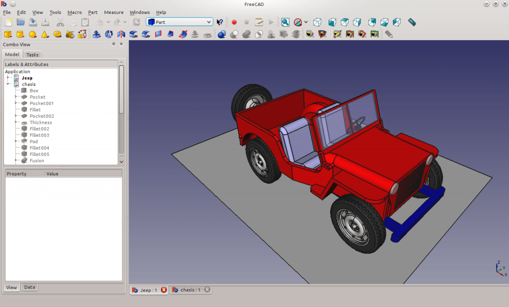

FreeCAD - это бесплатная кроссплатформенная многоцелевая 3D-CAD-среда с открытым исходным кодом для параметрического и информационного моделирования с поддержкой метода конечных элементов. С программой можно работать как через графический интерфейс, так и через терминал. Здесь применяется концепция рабочего места, есть геометрия твёрдого тела, встроенная консоль Python и фреймворк для создания скриптов и многое другое. Это отличный инструмент для создания 3D-проектов из 2D-моделей и наоборот, а также лучший бесплатный аналог программы AutoCAD.
